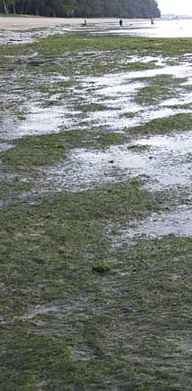
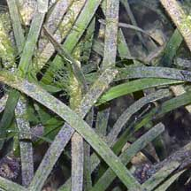
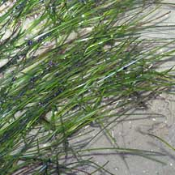
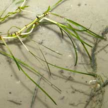
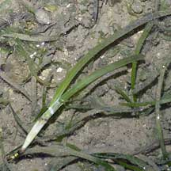
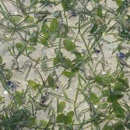
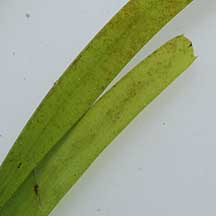
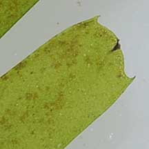
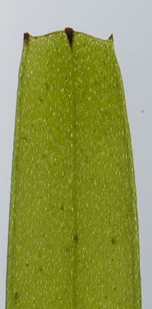
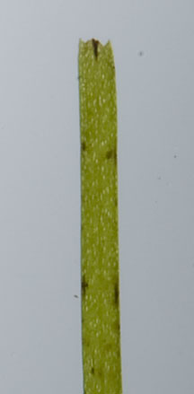

|
|
|
seagrasses
text index | photo
index
|
| Seagrasses > Family Cymodoceaceae |
| Needle
seagrass Halodule sp. Family Cymodoceaceae updated Mar 14
Where seen? This thin flat needle-like seagrass is sometimes seen on some of our shores, often mixed with other seagrasses. But luxuriant growths are more commonly seen on large natural shores such as Chek Jawa, where it is commonly found on the seaward side of the sand bars. The preliminary results of a transact survey of Chek Jawa shows it is widely distributed in the seagrass lagoon there. Needle seagrass is found throughout tropical Indo-West Pacific. It grows well in areas with high disturbance and plays a key role in stabilising the sediments with its mat of rhizomes and fibrous roots. Features: Needle seagrass is common on all our shores, especially on the edges of the sand bars towards the low water mark. The leaves may be short to very long. The leaves have three parallel veins which can be quite distinct. In most, the central mid-rib vein is quite prominent. The leaves emerge from thin rhizomes (underground stems) which have fine roots. Halodule uninervis has narrow leaves (0.1-0.3cm), 3-15cm long. These have a tip with two or three points. Sometimes those with broad leaves (1cm) are seen. Halodule pinifolia is said to be differentiated from H. uninervis by a single blunt rounded end, but a single rhizome may have leaves with one, two or three points. This confusion suggests the two are not actually separate species. Sometimes confused with other ribbon-like seagrasses. Here's more on how to tell apart ribbon-like seagrasses. Flowers and fruits: Needle seagrass has separate male and female plants. The flowers are tiny, usually forming at the base of the leaf sheath, buried in the sediment and emerging only for a short period. It produces seeds with a hard seed coat. Needle seagrass has an unusual way of releasing its seeds directly into the sediments so the seeds are not washed away by the currents. Studies suggest the seeds can remain dormant for some time. In this way, the seeds may help re-establish the species if the parent plants are destroyed by some natural disturbance. However, needle seagrass tends to spread more by vegetative growth than through its seeds. Role in the habitat: Although tiny, needle seagrass grows rapidly and densely from its underground stems. Forming a mat, it traps, builds up, and stabilises sediments. This allows other seagrasses to establish themselves and provides a more stable environment for burrowing creatures. Needle seagrass is also one of the seagrasses preferred by dugongs. Status and threats: Halodule pinifolia is listed as 'Critically Endangered' while Halodule uninervis is listed as 'Vulnerable' on the Red List of threatened plants of Singapore. |
 Large stretches of Halodule. Changi, Apr 10  Halodule with very broad blades. Sentosa, Jun 07  Chek Jawa, Jun 05 |
|
 Long skinny Halodule. Chek Jawa, Aug 05 |
 Long broad Halodule. Sentosa, Jun 07 |
 Short skinny Halodule. Chek Jawa, Mar 05 |
|
 Pulau Semakau, May 09  |
 Broad Halodule. Cyrene Reefs, Aug 11 |
 Skinny Halodule. Cyrene Reefs, Aug 11 |
| Needle seagrass on Singapore shores |
| Photos of Needle seagrass for free download from wildsingapore flickr |
| Distribution in Singapore on this wildsingapore flickr map |
Links
|
|
|
|
You CAN make a difference for Singapore's seagrasses!  |